← 返回阅读库 · 原论文目录
论文讲解阅读文档 · 机器人学 · v113
RainbowCombining Improvements in Deep Reinforcement Learning[1710.02298]
视频时长 00:27:36；讲解文字 12,888 字符；提取讲解画面 53 张。按视频原顺序阅读，每段文字保留时间戳。
文字来自整段视频的自动语音转写，按自然停顿分段，并与 PPT / 论文页面 / 演示画面对齐。未将讲解压缩为摘要；术语、数字和口述公式请结合画面及原论文核对。 阅读稿已校正规范部分明确术语误识别；原始逐字稿和每处修改记录另行保留。
讲解画面为源视频截图（640×360），不是可编辑 PPT 文件。全片按每秒 2 帧扫描内容变化，逐步展开页保留；连续动画保留代表画面。清晰度受源视频限制。
下载完整资料包 · 含离线 HTML、PDF、Word、全部 PPT 画面和字幕。
原论文与材料
Rainbow: Combining Improvements in Deep Reinforcement Learning · 下载完整 PDF（14 页）
按时间阅读
00:00:00–00:00:20 · 画面 001
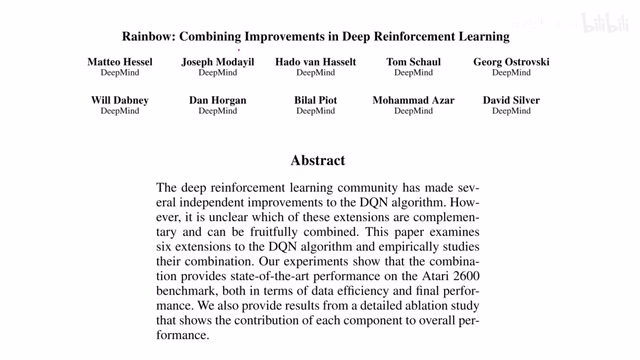
00:00:00–00:00:20 · 画面 001大家好,今天我们来介绍七篇论文 Rainbow Combining Improvements in Deep Reinforcement Learning 这篇就是把我们之前所有的对 DQN 的改进全部集合到一起所以一开始您也没有听错我们是一共要讲解七篇论文把这些所有的改进一并来看那么直接开始在今天视频中我们首先会快速回顾一下最基础的 Vanilla DQN 最基本的版本
00:00:20–00:00:24 · 画面 002
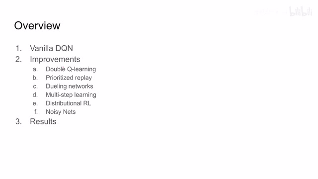
00:00:20–00:00:24 · 画面 00200:00:24–00:00:25 · 画面 003
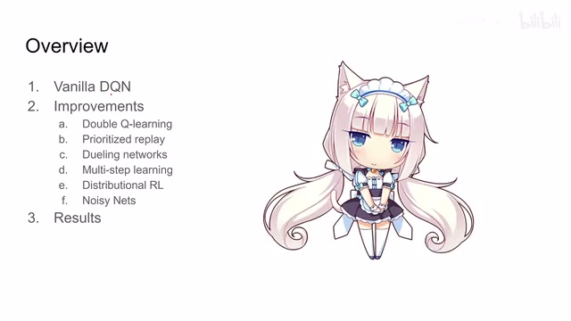
00:00:24–00:00:25 · 画面 00300:00:25–00:00:38 · 画面 004
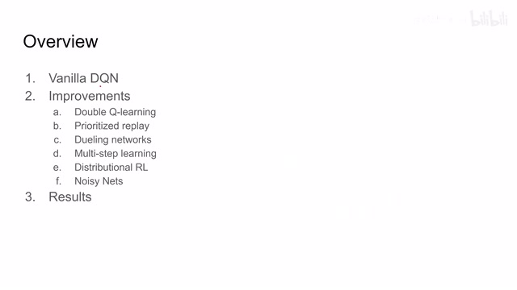
00:00:25–00:00:38 · 画面 004然后呢介绍一下本文集合的这六种改进这每一种改进后面呢都拖着至少一篇论文最后呢是作者汇报的一些结果那么首先来看我们最基础的这个 DQN 这事离现在不远家里有老人哎呀呀不用问老人了这是 2013 年的故事大家都经历过这篇 Playing Atari with Deep Reinforcement Learning 这里呢就是把我们的 Q-Learning 结合上 CNN 整了出来
00:00:38–00:02:38 · 画面 005
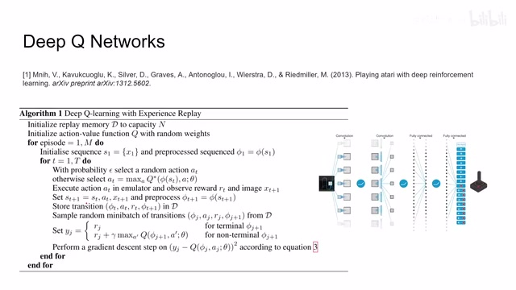
00:00:38–00:02:38 · 画面 005那么 q learning 的核心呢就是啊我现在有一个这个 action value function 啊或者叫 state action function 对吧它叫做 q 那么它呢会根据我们当前的这个状态比如说这里呢是一幅图像还有呢我们的这个动作的空间给我们在当前状态下执行所有动作的一个评分那么当然我们每次会选择这个对应 q value 最大的这么一个操作来执行啊这个是 q learning 在执行的过程中的一个过程那么这个 Q 值呢其实反映的就是我们这个 Network 它对当前的这个状态对我们期待的这个奖励也就是这个 reward 它的这么一个期望也就是说我在这个当前的状态下执行这个动作之后我期待我未来能够收到哪些的这个 reward 什么一个期望的一个估计
那么它的更新的方法其实非常简单看到这里是我们非常熟悉的 Bellman equation 那么 Bellman equation 当前的 reward 加上 discount factor 乘以下一个状态的对应了我们能取得的 Q value 这样子就得到一个 Q 值就是我们这个状态下应该目标的 Q 值你可以看到这里有 L2 distance 把我们当前网络输出和 target 的 Q value 给它结合了起来那么这个呢是最基本的版本我们是如何训练一个 q learning 啊这个 q learning 这个 function 呢是一个 cnn 那么这里呢有几个点需要注意一下首先是第一个我们在收集这些 transition 这些 samples 的时候呢用的是这个ε-greedy policy 也就是说我在生成这个 action 的时候呢有 ypsum 的概率呢是随机的产生一个动作那剩下的概率呢就是我们根据我们当前的这个 q network 啊我们这里叫 q star 我们认为它是最优的一个策略那么根据它呢选择一个 action
那么这个呢是一 greedy policy 那么一位收集样本时使用的这个 policy 呢跟我们最终推断时候使用的这个 policy 它不一样所以呢 q learning 是一种 of policy 的方法那么再往下来看呢就是看到这个 target value 这个 biometric patient 更新的时候呢
00:02:38–00:03:10 · 画面 006
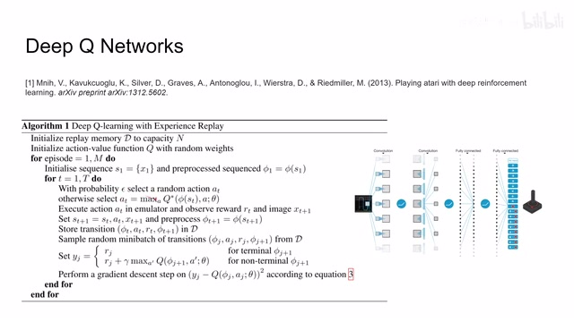
00:02:38–00:03:10 · 画面 006可以看到虽然我们训练的是 q network 但是在我们计算 target 的时候也用到了 q network 那么当然这一帧是不传递梯度的它只是作为一个 target value 但是因为它在 target 中用到了自己的特性我们认为这是一种 bootstrap 的方法那么以上就是最基础版本的 q learning 那么再往下时间来到两年后 2015 年他们把之前的结果凑了凑发了一篇 nature
00:03:10–00:03:22 · 画面 007
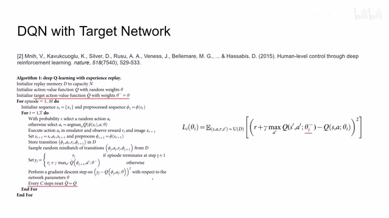
00:03:10–00:03:22 · 画面 007那么这些论文相对于之前的改动主要就在于 target network 从现在的角度来看这也是 dqn 的标配了 target network 就是说我创造一个跟我们原来 q function 结构一模一样的这么一个网络它一开始的权重也是跟我们 online 的 q network 的权重是一样的那么设置 target network 的目的就是在我们计算 bioman update 时候我们需要 q value 原来我们是直接从 online network 中
00:03:22–00:03:23 · 画面 008
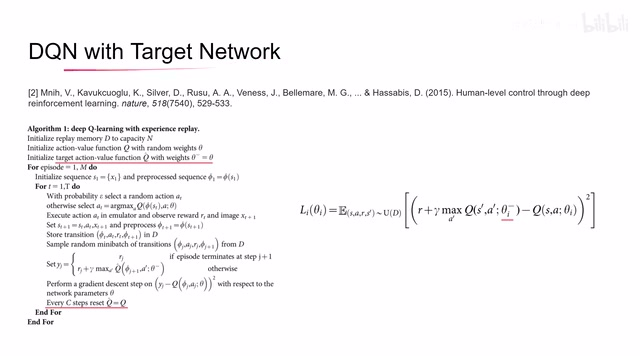
00:03:22–00:03:23 · 画面 00800:03:23–00:04:54 · 画面 009
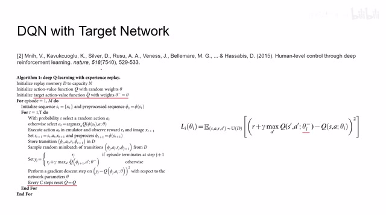
00:03:23–00:04:54 · 画面 009把这些 next date 然后最优的 action 输进去得到一个 q value 作为我们 target 但实际上这很容易导致我们训练过程的不稳定因此在本文中的作者就提出说我用 target network 用他的这套参数来估计我们的 target这样子呢来做一个训练而这个 target network 呢它是不通过梯度更新的它更新的策略是当我们训练过这个 C 部的这个 online network 之后呢啊我们直接把 online network 的参数呢给它复制过来那这样子呢就会让我们的这个 target network 的这个参数呢这个θ一减呢它略微的滞后于我们这个 online network 这个θ那么之后呢其实在这里并不是一个坏事
他呢会让我们这个 target value 呢变得将会更加稳定让我们整个训练的过程呢变得更加稳定那么右边这个式子呢就是这两个式子展开来具体的写法那你可以看到最显著的区别呢就是这里我们使用的参数呢是这个θi 一减而不是之前的这个θi 那么加入这个 target network 之后呢我们经典的这个 dqn 就已经确定好自己的形状了那么接下来呢我们就可以介绍针对它的一步一步的改进了
00:04:54–00:06:54 · 画面 010
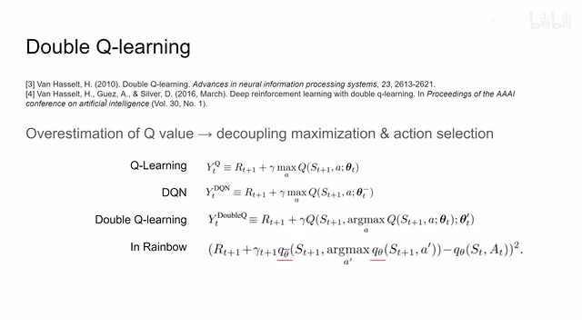
00:04:54–00:06:54 · 画面 010那么这里呢来到第一个改进 WQ learning 那么这个思想呢早在 2010 年就有了在这两篇论文里面呢得到了很好的描述那么它要解决的一个问题呢就是我们在以往训练 DQN 的过程中呢经常这个 overestimate 这个 Q value 也就是说呢过高的估计了这个 Q value 这个 Q network 总是自我感觉良好这是一个不太好的事情那么在这个论文中呢作者认为导致这个 overestimate 的原因呢是因为我们这个 maximization 还有这个 action selection 呢是在一起进行的那这里呢我们看到无论你是传统的这个 qlearning 还是把这个 online 这个部分呢换成了我们 target network 这一部分你在想要最大化 q 值呢还有包括在这个 next state 选择 action 的这个过程中呢都是使用了同一组的参数
无论是你使用使用了 online network 还是使用 target network 那么这个呢就是作者认为会导致 overestimate 这样一个原因那么因此呢解决方案也很简单我只要把选择下一个 state 的 action 这个过程跟我们找到下一个 state 的 q 值这个最大值的这个过程给它分开那就好了因此呢作者提出了这个 wq learning 它的改动呢其实非常直接你可以看到呢首先它也是维护了两个网络我们这里一个叫做 c3t 一个叫 c3t prime那么这两个网络的参数设计呢在原文中设计的是每训练了几步之后呢我就交换这两个网络的参数也就是说呢随着我的训练的继续呢过一会儿呢我会把这个θ'和这个θ的位置呢换一下来继续用那么它的核心的思想是我选择下一个 state 的这个 action 的时候呢所使用的这个 q network 因为我们是需要 q value 来选择 action 选择这个 action 的这个网络的参数呢跟我们计算下一个状态这个 state action pair 的
这个 q value 的这个参数呢是不一样的啊，就是这个 theta t 和 theta t prime 的这个关系。那么这样做呢，就把我们这个 maximization 这个过程和这个 action selection 啊这个过程给他解耦了。那么在 rainbow 中呢，作者做了一点改进，因为我们现在本来维护的是一个 online network，一个 target network。这里呢，用 theta bar 代表这个 target network，这个 theta 呢代表的是 online network。那么因为我们已经有这两个网络了，我们就直接拿回来用吧。
00:06:54–00:07:52 · 画面 011
00:06:54–00:07:52 · 画面 011但是呢，不再交换他们的角色了。所以呢，在 rainbow 里面呢，我们可以看到，我们在计算我们在计算 target value 的时候呢，reward 加上这个 discount factor 承让下一个状态这个 state action value 对吧。他这个 state action value 呢，是由这个 target network 这个 theta bar 来估计的。但是呢 ，st plus one 这个时刻的这个 action 呢，是通过我们 online network 他的这个 q value 来选择的。那么这个呢，就是 decoupling 嘛。
是 Rainbow 里面的第一项改动，这项改动对代码的改动也非常小。你在实际操作中，在实际运行中你只需要多运行一次 online network 就可以了。那么这个是第一项改动。那么接下来来到第二个改动，Prioritize experience replay。这篇论文是 2015 年的，它的思想跟 Boosting 的思想其实非常像。我们发现如果在学习过程中某个样本它的误差相对比较大。
00:07:52–00:08:26 · 画面 012
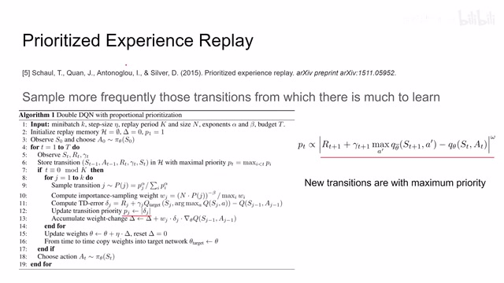
00:07:52–00:08:26 · 画面 012那么我们在未来就有更高的概率呢去抽到这个样本让他继续的学这个样本。那么同时呢，我们每次新采集的样本呢有更高的这个权重，我们更容易呢抽到他们。这其实是个非常直观的改进啊，在 replay buffer 里面有权重了。你看到呢，这里呢他每次采集到样本之后会以最大的优先级呢来给他存起来。那么在采集样本的时候呢，我们会根据所有样本的优先级呢来做这个采集。
00:08:26–00:08:27 · 画面 013
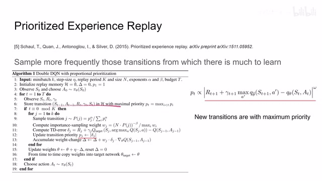
00:08:26–00:08:27 · 画面 01300:08:27–00:09:05 · 画面 014
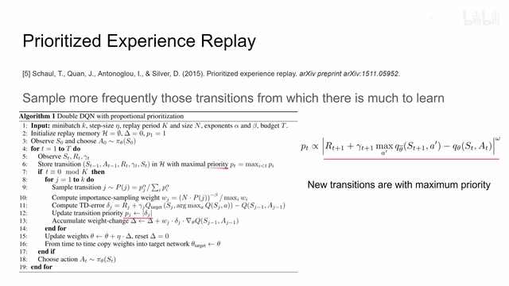
00:08:27–00:09:05 · 画面 014然后呢做一个这个 impostant sampling，那么每一个样本呢对于 loss 贡献呢也是各不相同的。然后呢计算这个 td error 就是标版 equation 这个更新吧，减去当前的这个输出。然后呢我们用这个 td error 它的这个绝对值来更新一下我们这个 transition 的这个 priority。也就是说我们 replay buffer 中的这些 priority 呢就可以随着变化。那么当然了，最后我们会根据这个 impostant sampling 来重新计算我们这个 loss 然后呢做梯度下降就可以了。那么这个呢是一个非常简单的设计。
00:09:05–00:10:26 · 画面 015
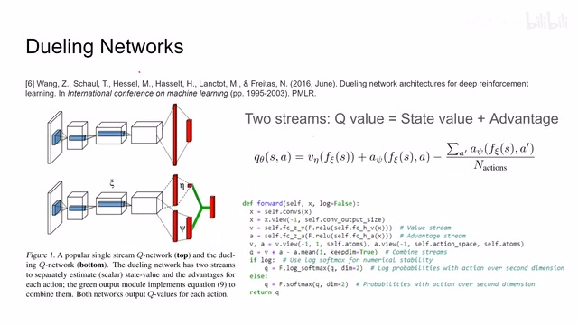
00:09:05–00:10:26 · 画面 015那么接下来来到第三个改进，Dueling Networks。那么这个方法主要是在这篇论文里面论述的。你看一眼插图就立刻明白了。原来我们的 Network 是输入一个图像，然后它就直接每一个 action 的 size 给出一个 Q value，就是这样一个 head 就结束了。那么在 Dueling Networks 里面，我们这个图像首先进来也是各种 encoder 编码编出一个状态之后，然后它分成了两支。
一只呢过这个 eta network，另一只呢过这个 sin network。然后呢把这两个这个网络再一结合起来，最后呢再形成跟 action space 一样的这么多这个输出。那么为什么这样设计呢，作者说呢，我希望把这个 advantage 这个概念呢给它引入进来。那么 advantage 呢一般就是指这个 state action value 这个 q value 减去我们当前的这个 state value 这个 x。
那么它呢就表示说我做下这个 action 之后能得到哪些 advantage。那么在这篇论文里呢，相对于传统的我们直接对这个 qvalue 进行估计，这里呢我们做了一个拆分，把这个 qvalue 呢拆成这个 state value 加上 advantage 这样一个形式。然后呢我们有两只网络分别对这个 state value 还有这个 advantage value 分别进行估计。然后呢再用这个式子呢把它俩合并出一个这个 qvalue 来。那么以上呢就是这个改进的核心思想。
那我们来看到它的实现，那么输入的图像过了一堆 CNN 层之后呢，一部分进到这个 V，一部分进到这个 A 里面。那么得到这个结果呢，你可以看到这里呢变成了这个 BatchSize 乘以 1 而成一个 Self.Atoms 的形式。这个 Self.Atoms 呢，是我们后面会涉及到的另一项改进。那这里呢，你可以先无视它。假如说呢，它就是一个 BatchSize 乘以 1 的这样一个结构了。那这边呢，也是一个 BatchSize 乘以这个 ActionSpaced 这样一个结构。
00:10:26–00:10:59 · 画面 016
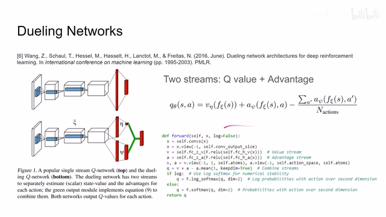
00:10:26–00:10:59 · 画面 016那么可以看到它这里的计算就是 Q 等于 V 加上 A 减去 A 的平均值，就是把这两只给它结合起来了。那么最后过一个 softmax 就可以把我们的 Qnetwork 值给它输出来了。那么来到第四个改进就是 multistep learning，这个其实更简单了，就是我不是每一步跟环境的交互都要过学习决策这些过程。比如说我做了一次决策之后，我就重复多几遍这个 action。
00:10:59–00:11:03 · 画面 017
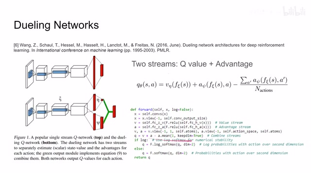
00:10:59–00:11:03 · 画面 01700:11:03–00:11:09 · 画面 018
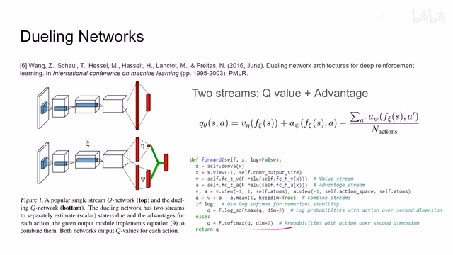
00:11:03–00:11:09 · 画面 01800:11:09–00:12:02 · 画面 019
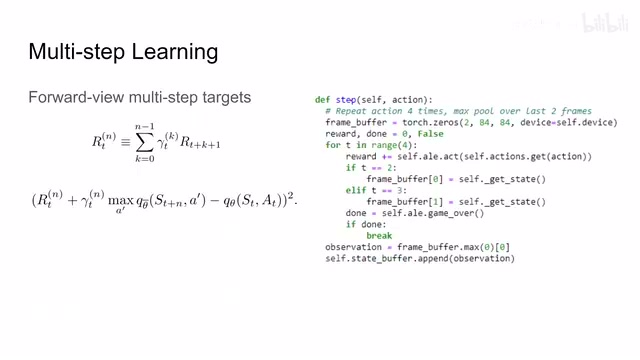
00:11:09–00:12:02 · 画面 019然后呢把中间积攒的这些 reward 加起来啊，如果必要你喜欢的话，你可以上个 discount factor 对吧。把他们加起来之后，然后呢作为我们新的 reward。然后呢再套到我们这个 bioman equation 里面，相当于我们每隔了 n 步呢之后呢才更新了一下这个 bioman equation 对吧。那么用到的这个状态呢也是 n 步以后的这个状态啊。这个呢是非常简单的一个思路。
在雅达里环境里面意外的有用，比如说这里我们在实际的实现中重复应该是 4 次，然后使用最后的两帧作为下一个状态的输入。那么这个就是 Multistep 的实现非常简单的一个改动。那么接下来我们介绍一下本文中集合的最复杂的最比较难理解的这么一个改动叫做 Distributional RL。
00:12:02–00:12:21 · 画面 020
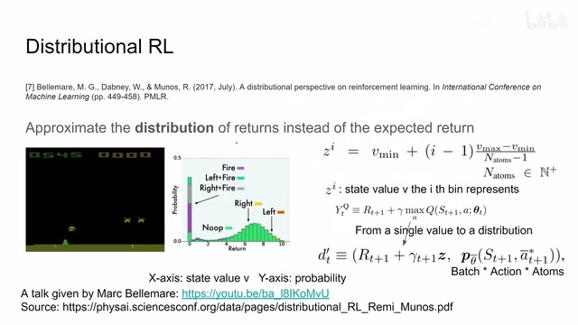
00:12:02–00:12:21 · 画面 020那么他的提出呢是在这篇论文里面，包括呢还有一些后续的工作，但是没有被集合到这篇论文里面。感兴趣的朋友呢你可以先去看这个视频了解一下这篇论文的这个细节，然后呢再去看这个 slice 看到他后续的一些工作。那么这里呢我们的讲解呢主要是依赖于这个视频里的解释，略去了全部的数学证明的环节。那如果你他的数学证明感兴趣呢，非常推荐你去看这篇论文中。
00:12:21–00:12:22 · 画面 021
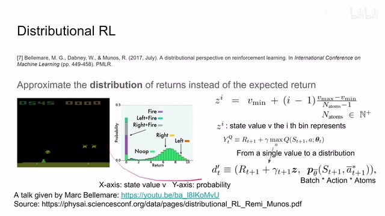
00:12:21–00:12:22 · 画面 02100:12:22–00:12:45 · 画面 022
00:12:22–00:12:45 · 画面 022他告诉了我们为什么我们这样做之后依然会收敛等等这些问题，他都有一个证明。那么 distributional RL 它的核心的思想呢就是我用这个 distribution 来去进思一个 return 而不是是 expected value。那说人话呢就是我原来计算 qvalue 的时候呢我就用一个值来计算出一个 qvalue 了，那其实这是不合适的，因为它只是一个对未来的期望，它并不能够很好地反映这个 distribution 的性质。
00:12:45–00:12:46 · 画面 023
00:12:45–00:12:46 · 画面 02300:12:46–00:13:38 · 画面 024
00:12:46–00:13:38 · 画面 024这里我们想象，假设有两个 distribution，一个 distribution 比如说是正态分布，那么它的期望就是 0。那么另一个 distribution 假设它是一个非常极端的情况，假设它有 0.5 的概率取到 10.5 的概率取到-1。那么这样子，这个 distribution 它给我们的期望依然是 0，但是你明确能感觉到这个 distribution 和之前我们说的正态分布它不是一个东西。
正是因为分布的不同，它可能会对我们未来的决策产生一些便利至少说是影响我们未来的决策。所以在这篇论文中作者的思想就是说我用 distribution 来去建立我们 return 而不是说只是单纯的一个期望的值去建立我们 return。那么继续来说来看到这个图，假说我们 q value 它的范围是从 0 到 10。
00:13:38–00:13:39 · 画面 025
00:13:38–00:13:39 · 画面 02500:13:39–00:14:07 · 画面 026
00:13:39–00:14:07 · 画面 026那么现在呢我们把 0 到 10 划分成均匀的很多份啊，那么每一份呢我们用一个数字去表示这一份这个值它出现了一个概率。这里呢我们把每一份呢叫做 items，也就是我们之前说这个 self.items 什么意思呢，这个意思。然后呢你可以看到我们把 vmax 到 vmin 分成了这个 nitems 这些份，那么每一份代表的这个 v 的值呢我们叫它 z 上面有一个小 i。
00:14:07–00:14:08 · 画面 027
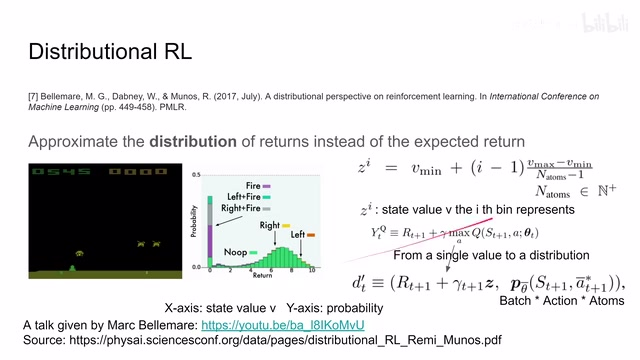
00:14:07–00:14:08 · 画面 02700:14:08–00:15:09 · 画面 028
00:14:08–00:15:09 · 画面 028那这里就是我们看到这个图里，假如说第 i 个这个 bin 代表了这个 state value 的这个值就是它的 x 轴的坐标，那就是这个 z 上面有个 i，而这个 bin 的高度就代表了这个值它出现的这个概率。那么现在我们就可以把原来这个 Bellman equation 给它改一下，原来它这些里面都是单个的这些值，现在我们把这个 state value 这个值换成一个 distribution。
那么对应的 biometric equation 呢他就长这个样子，那么区别呢主要就是在这个 state 的这个表示上，可以看到呢原来呢我们是一个 batch 乘以 action 这样一个 size，那现在呢我们的表示呢就变成了这个 batch 乘以 action 乘以 atoms 这样一个形式。那么我们来换到这个图更直观一点啊，可以看到呢原来是我们这个 dqn，那每一个 action 呢我们都只对应一个 expected return 嘛，所以呢它就是一个单独的值。
00:15:09–00:16:05 · 画面 029
00:15:09–00:16:05 · 画面 029那么你有多少个 action 呢，这个网络呢就给你输出多长的这么一个 q value 的这个序列。那么现在呢我们用一个 distribution 去描述这个 return，那每一个 action 呢都有一个 distribution，那这个 distribution 的长度呢我们叫它 atoms 嘛，所以呢这个网络的输出呢是 batch size 乘上这个 action 再乘上这个 atoms。那这里呢作者因为选了是 51 个 atoms，所以呢他这个方法叫做 c51。
那么现在既然我们已经建立了 State representation，用了一个 distribution 去描述 State value，那么之后我们就要考虑如何用 Bellman equation 来对我们 State representation 是一个 distribution 一个概率分布来进行更新了。那么还是在原文中，作者花了大量的篇幅告诉我们说，在这种情况下我们用 Bellman equation 它是能够收敛的，至少说不会让结果变得更差。
00:16:05–00:16:06 · 画面 030
00:16:05–00:16:06 · 画面 03000:16:06–00:16:07 · 画面 031
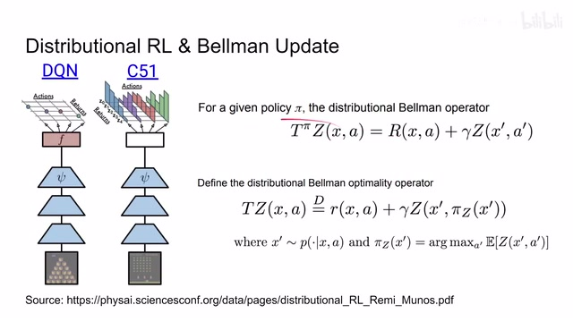
00:16:06–00:16:07 · 画面 03100:16:07–00:16:39 · 画面 032
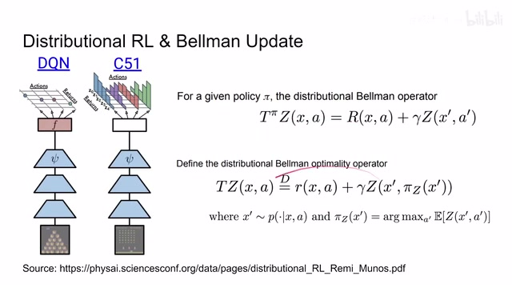
00:16:07–00:16:39 · 画面 032那么同时作者还证明了另一个部分就是说在这样的 distribution 的描述下面我们能够学到一个好的 policy 这也是你在后面提出任何 reinforcement learning 方法用任何方式更新你的 loss function 的时候必须要正两个课题一个首先就是你的 state value estimation 它是能够收敛的其次就是你的 policy learning 能够学到一个最优的值那么接下来我们看作者是怎么样实现 distributional RL 的表面 update 的
00:16:39–00:18:23 · 画面 033
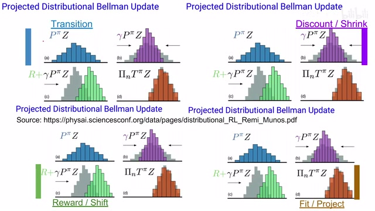
00:16:39–00:18:23 · 画面 033那回顾一下我们刚刚介绍的这个 Bellman equation，首先第一步是 transition，因为我们是做这个 Bellman update，它需要的是下一个 state 的这个 distribution。那所以呢我们先把下一个 state distribution 算出来，假如说它是蓝色的这个样子，那么第二步呢就是开乘这个 discount factor 乘上这个 gamma。
成了它的作用呢会让我们的整个这个 distribution 呢给它收缩，因为这个 discount 嘛它是越成越小的嘛，所以我们的 distribution 呢都会向较小的那一方向靠拢。那假如说这个中间是 0 这个情况下呢，它是这个 distribution 这个概率分布呢就会向中间收缩。那么随后呢我们在这个 bill my equation 里面加上 reward 对吧，它呢就是直接一个常数嘛，我们相当于把这个概率分布呢做了一个平移。
那么到这里的这一通操作，我们的 BioMindEquationBioMindUpdate 其实已经走完了，我们已经算出了我们的 TargetValue。那么接下来我们就想如何让我们现在这个 Distribution 跟我们这个 TargetDistribution 给它相契合，就是怎么样把我们当前这个 Distribution 给它推到新的 Distribution。那么如何把一个 Distribution 推到另一个 Distribution 这工具可太多了，最简单的我们 CareDivergence 一个 CareCentropy 招呼上就完了。
那么这个就是 fit 这个过程，所以你看整个它的 bump update 也不复杂，只不过就是把原来我们是针对一个数值的这样一些操作全部给它拓展成针对一个 distribution 来做一个拓展，这样子原来 L2 distance 就变成了 KL divergence，其他的原理上都没有什么本质的区别，那么下面我们就来看作者具体的工程实现，我们怎么样用一串离散的变量去描述概率分布，同时怎么样去稳定的做更新那么首先我们拿到代码，在我们的这个 replay buffer 里面采样对吧，采出来之后呢，当前的这个状态送到我们的 online network 里面，这个时候呢，它给我们输出，正如我们之前所提到的，它的形式呢是这个 batch 乘以 action 乘以 atoms 这样一个形式，那么即便呢我们把当前这个之前的 action 呢给它选上，那么它的输出呢就会变成这个 batch 乘以 atoms 这样一个形式，那么这个呢是我们的这个正向的这个传播
00:18:23–00:20:23 · 画面 034
00:18:23–00:20:23 · 画面 034那么接下来呢我们要看这个 target value 啊，那么首先不要计算梯度了，那把我们的下一个状态送到我们的 online network 里面，然后呢再根据这个 online network 的这个输出呢，然后呢根据 online network 的输出呢选出我们之后的这个 action 是什么，那么这个呢就是 double dqn 嘛，原来我们都是一个 target network 要做的事情，现在呢给它拆分成 target network 和这个 online network
这里呢我们看到这个 target net 有一个 reset noise，这个呢是我们最后一项改进是 noisy layer这里我们会先无视它，然后我们把 next date 送到 target network 里面，再根据我们 online network 选出来 action 来对下一个状态 q value 做一个估计，那么到这里相对于之前的 Bellman equation 一切正常，只不过我们还是把下一个 q value 原来是一个数，它变成了是一个 distribution，那么然后我们就要开始计算 Bellman update，首先我们看到第一个是 returns
那就是我们的这个操作进行了 reward 的嘛，要加起来嘛，这个是没有什么问题的，然后呢是个 non terminals 啊，如果说这个序列在这里结束的话呢，他这个后面呢就不用管了，这是一个开关，然后呢是这个 self discount 他的指数呢是这个 self.n，因为我们进行是 multi-step 这个 rl，所以呢他可能是直接跳过了 n 步的这个 discount factor 呢也要跳过 n 步，这很合理啊那么最后呢这里呢我们承受呢是这个 selfd support，他呢就是我们之前介绍的这个 z，他代表了我们每一个并次对应的这个 state value 是多少，那么显然这个 tz 呢他也是这个 batch size 乘以 items 这样一个大小，那么经过了这样一个 biome update 之后呢，我们的 tz 呢还要做一个 clamp
00:20:23–00:22:23 · 画面 035
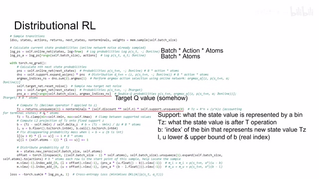
00:20:23–00:22:23 · 画面 035因为在这里呢我们为了方便起见规定说这个 state value 这个 v 它的最大值和最小值是多少，因为有了这个最大最小值的范围我们才好说用 items 来去覆盖这一个范围内的这个概率分布，所以呢我们有必要限制一下这个 v 的值，那么这个 tc 呢就是我们经过这个 Bellman update 之后呢目标这个 target value，你想原来我们是只有一个值吧，我们做这个 Bellman update现在我们虽然把它变成了 distribution 我们有 items 格这样的 state value 那么在这一次我们要把 biome operator 对所有的这些 state value 都做一遍那么这个就是 tz 那么接下来一步就是代码实现中非常重要的一步这里做的叫做 L2 projection 原来我们有 items 格这些的数来分别表示对应的 state value 它出现的概率比如说第一个 items 它对应的 state value 是多少
它对应的概率是多少它有这样一个表那么现在你做这个表面 operation 之后呢你在这个 state value 呢就发生了改变而这个新的 state value 呢它是不存在于原来的这个查找表当中的但是呢这个表既然已经定好了我们就不好改了我们只能把原来的一个 bin 代表这个概率密度呢拆分到不同的 bin 里面那么你可以看到这里呢就要做一个操作就是呢它在计算说我的这个新的这个 state value它应该对应的是第几个 b 呢这里呢我们分别做地板和天花板嘛求一下我们这个新的 sit value 它应该对应在这个 distribution 中的哪一个位置那这里呢一个 l 一个 u 嘛就一个是 lower bound 一个是 upper bound 那么它呢你用这个 floor 和 sill 就可以计算出来这里呢还需要做一个操作就是如果说这个 l 等于 b 等于 u 的时候那它这上下界不重合了吗这样是不行的
我们要把它错开是 L 和 U 的它的差始终是 1 那么换一个更直观的解释我们来看假如说我们现在原来一个 bin 它代表一个 state value 是蓝色 state value 它经过 Bellman operator 之后变成了红色的 state value 但是红色 state value 不能被现在的任何一个 state value 所表示我们也只能计算出它的剩下界也就是这两个蓝色
00:22:23–00:22:27 · 画面 036
00:22:23–00:22:27 · 画面 03600:22:27–00:24:27 · 画面 037
00:22:27–00:24:27 · 画面 037我们只能说这一部分的这个概率呢转移到了这个位置但是呢因为这个位置呢我们没有单独的一个这个 bin 来描述它所以呢我们不得不把这一个 bin 拆成这两个 bin 的形式啊让这两个 bin 的这个和来共同描述说它这个转移之后的样子那么这个呢就是这个 projection 的过程本质上就是因为我们已经选择了一种固定的这个量化 state value 的方法我们对于这种新的没法表达 State value 只能做一个这样的近似那么下面我们就来看作者是怎样做近似的这也是整个实现中最精妙的一个部分那么正如我们之前所说的我们是要把这一个 State value 它对应的概率的密度给它转移到新的 State value 上但是我们没有准确的 State value 我们只能根据它红色的值对于它的上下边界的差值
来把这个原有的这个概率密度呢分别加到这个两个新的这个概率密度上面那么因为呢我们这个红色离右边这个蓝色的并呢更近一点所以呢它分得的这个概率密度呢应该更大而因为它离左边这个 lower bound 更远呢所以左边这个地方呢它分得的概率密度呢应该更小当然这个图画的不太严谨啊因为这两个绿色的这个并加起来的高度呢应该跟这个蓝色的并加起来高度是一样的所以呢你知道它的意思就好那么这里具体的实现呢这里作者使用这个 index add 首先呢通过这个 offset 来确定说我是针对哪个 sample 来做的这个 index 然后呢我们首先计算这个 lower 的这个 bin 上面它应该能分得多少的概率啊这个原始的这个概率乘上乘上这个新的 state value 到它的这个 upper bound 它的距离因为距离越近分得的这个权重越大那么距离越远分得的权重越小嘛
00:24:27–00:24:40 · 画面 038
00:24:27–00:24:40 · 画面 03800:24:40–00:24:41 · 画面 039
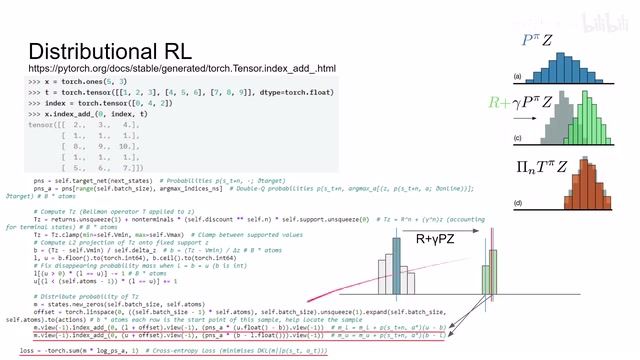
00:24:40–00:24:41 · 画面 039所以呢你这个 lower bound 加的数值呢它的权重呢应该是这个实际的值距离 upper bound 它的这个距离注意这个转换那么同理呢我们在计算 upper bound 的时候呢它的权重呢也是这个原来的这个概率乘以它这个新的这个 state value 距离 lower bound 它的这个距离加总在一起就可以了你可以发现呢这两个加起来因为我们之前说的 upper bound 和 lower bound 它的差呢始终是 1 所以呢我们原始的这个概率分布呢这个 pnsa 呢
00:24:41–00:25:07 · 画面 040
00:24:41–00:25:07 · 画面 04000:25:07–00:25:08 · 画面 041
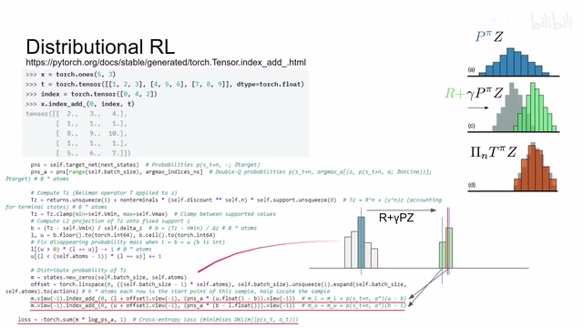
00:25:07–00:25:08 · 画面 04100:25:08–00:25:44 · 画面 042
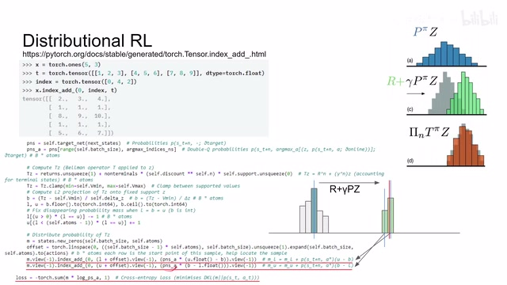
00:25:08–00:25:44 · 画面 042它乘上的这个系数呢加起来的和呢始终是 1 我们并没有让这个概率呢消失只不过呢把它拆分到两个不同的命里面了那么你对每一个这种原制带的概率分布呢都可以做这样的操作最后呢这样逐渐的累积起来就可以得到我们新的这种概率分布了那么在得到这个新的概率分布之后呢我们直接用一个 cross entropy 然后他把这个新的概率分布和现在的输出的这个 care divergence 给它缩小那就可以了那整个来说呢是非常巧妙的设计那么随后呢我们来看到最后一项改进这个 NoisyNets 那么他的思想呢就是我们通过更改这个网络结构来鼓励我们这个 policy 呢在一开始呢广泛的进行探索那整个的这个原来这个 linear layer 呢它长这个样子吧现在呢加上这个 noisy 这个 part 那么这样子呢我们的这个 linear layer 里面呢多了一些不确定性它呢就会让我们的这个 agent 的表现呢有一些不确定性
00:25:44–00:25:59 · 画面 043
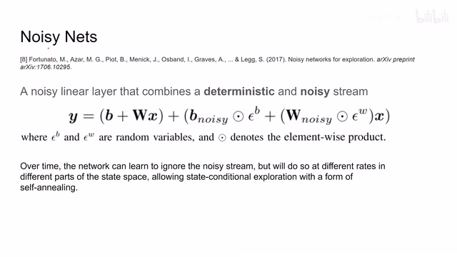
00:25:44–00:25:59 · 画面 04300:25:59–00:26:01 · 画面 044
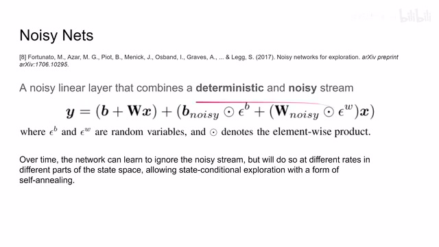
00:25:59–00:26:01 · 画面 04400:26:01–00:26:18 · 画面 045
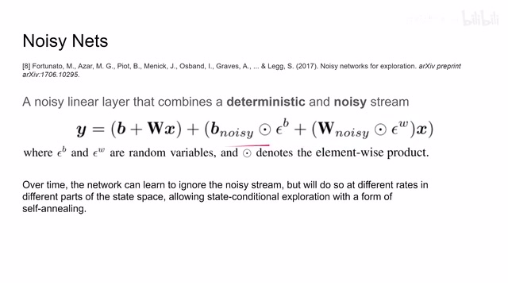
00:26:01–00:26:18 · 画面 045那其中这个 yb 的和 yw 的都是随机变量那么加上这个之后呢做人以推神的意思就是说随着我们训练的继续呢我们这个网络呢能够逐渐的开始忽略起后面这个 noisy 的这些部分但是呢你学习的过程毕竟是一定时间嘛随着你学会了如何去忽略这个 noisy part 你的这个 agent 的这个表现呢应该也就不错了所以呢你可以说它是一种自动的这种退火的机制是一种很有意思的设计
00:26:18–00:26:20 · 画面 046
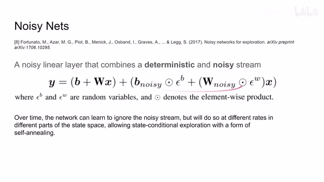
00:26:18–00:26:20 · 画面 04600:26:20–00:26:27 · 画面 047
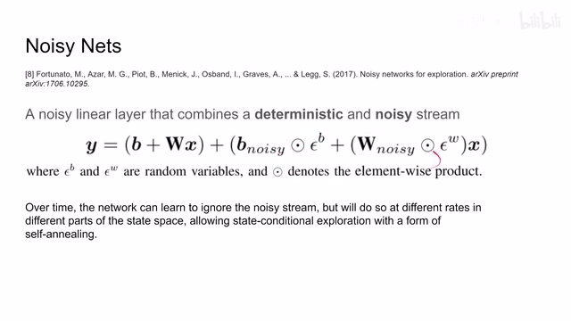
00:26:20–00:26:27 · 画面 04700:26:27–00:26:28 · 画面 048
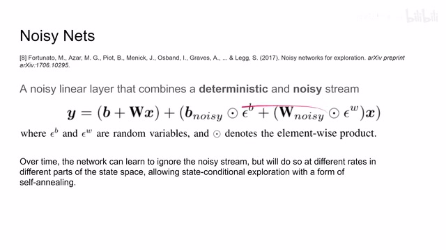
00:26:27–00:26:28 · 画面 04800:26:28–00:26:43 · 画面 049
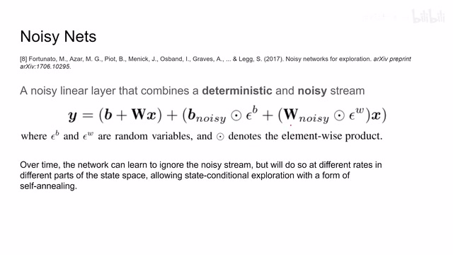
00:26:28–00:26:43 · 画面 049好的那么以上呢就是本文整合的这六种改进真的是一篇极大成者那我们来看作者汇报的结果吧那这里呢作者汇报了 57 个 Atari 2600 的这些游戏的表现左边这边呢是一个 ablation 看起来可能这个 Double Q-Learning 呢并不是说非常的必要但是其他这些部分呢明显能够看到性能的这个提升那这边呢是作者汇报一些主要结果就是本文的方法的表现超过人类表现
00:26:43–00:26:58 · 画面 050
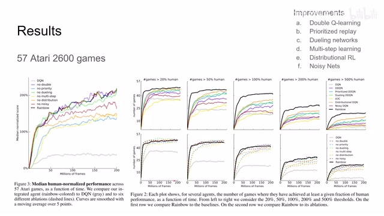
00:26:43–00:26:58 · 画面 05000:26:58–00:26:59 · 画面 051
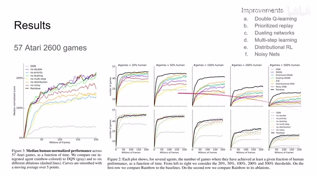
00:26:58–00:26:59 · 画面 05100:26:59–00:27:36 · 画面 052
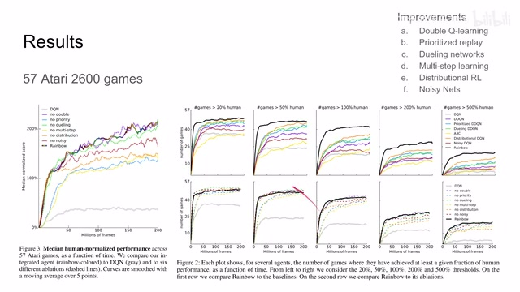
00:26:59–00:27:36 · 画面 052一定百分比的这个游戏的数量那显然是随着这个训练的这个交互的次数增加呢性能越来越好那当然了本的方法肯定是比之前的这些方法呢都要好的那么总的来说呢能把这些改进都放到一起出一片 state of art 也是非常不容易的一个事情现在本文这个 Rainbow 呢还是经常作为这个 base 案反复拿出来引用那么如果你对这篇论文感兴趣的话还是非常推荐你去看原文中汇报的这个各种设计它的总结还有它的实验的部分那么感谢您的收看再见
00:27:36–00:27:36 · 画面 053
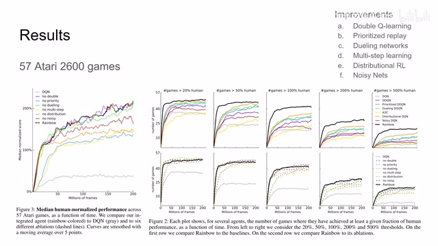
00:27:36–00:27:36 · 画面 053转写与来源说明 · 0 个自动复核提示
保留 64 个原始语音片段，0 个片段触发自动复核提示。提示仅用于定位可能的术语、重复或识别问题，不等于已确认错误。
讲解画面为源视频截图（640×360），不是可编辑 PPT 文件。全片按每秒 2 帧扫描内容变化，逐步展开页保留；连续动画保留代表画面。清晰度受源视频限制。
原视频：paper/合集_2026-10-16_机器人学/[论文简析]RainbowCombining Improvements in Deep Reinforcement Learning[1710.02298].mp4
SHA-256：18f03e0b2a1c8b77c880f9a4095f9815cf37a25462db711ef4dbe6b5a491f7a3
全文按视频语音与画面制作。原论文可从上方链接下载；完整资料包保留全文、原始逐字稿、字幕和校对记录。